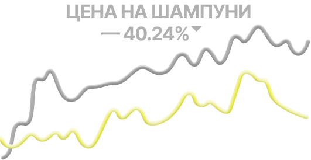

Сокращение использования пластика на 2–5 кг пластика в год

стоимость на 20–40% ниже жидких средств

твёрдые средства на 70–90 применений, а не 30–40
жидкий шампунь

твёрдый шампунь
По сути жидкие средства — это вода в пластиковой упаковке, которая быстро заканчивается. Твёрдый формат экономит деньги, сокращает мусор и упрощает хранение.
Твёрдый шампунь лучше жидкого, потому что служит дольше, занимает меньше места, создаёт меньше отходов и стоит дешевле в долгосрочной перспективе.
Жёсткая вода может требовать дополнительного ополаскивания. Если кожа головы чувствительная, лучше выбрать менее концентрированный жидкий формат. Кроме того, чтобы привыкнуть к новой форме продукта, нужно время. Для некоторых использовать жидкий шампунь с обильной пеной привычнее.
Бюджет реже заканчивается, меньше покупок — экономия в долгую. Твёрдый шампунь не проливается, подходит для долгих путешествий, компактен. Меньше пластиковой упаковки, минимальное использование воды при производстве и меньше выбросов при транспортировке.
1

жидкие средства менее концентрированные
2

зачастую упаковка минимальна
3

логика проще и экологичнее
4

современные формулы универсальны
Твёрдый формат шампуня — это экологичный и удобный вариант, потому что служит в 2–3 раза дольше, компактен, не требует много упаковки и экономичен в использовании.